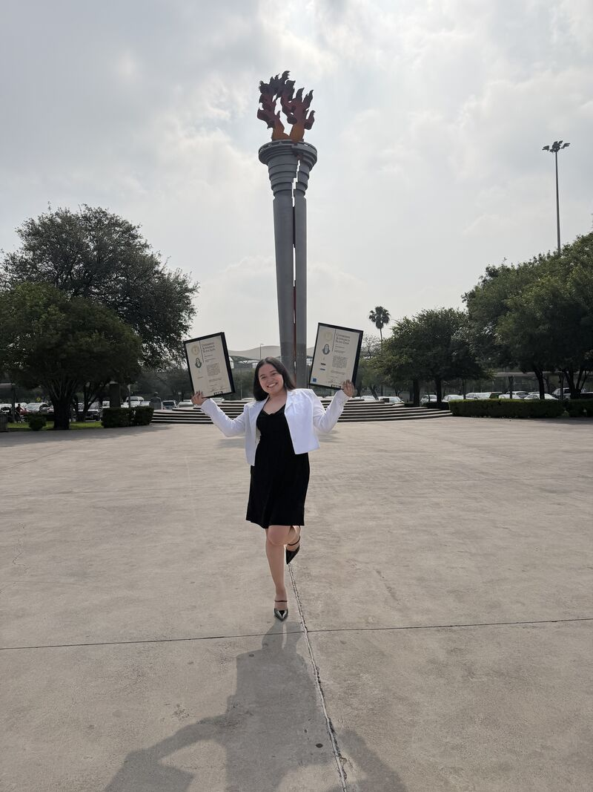
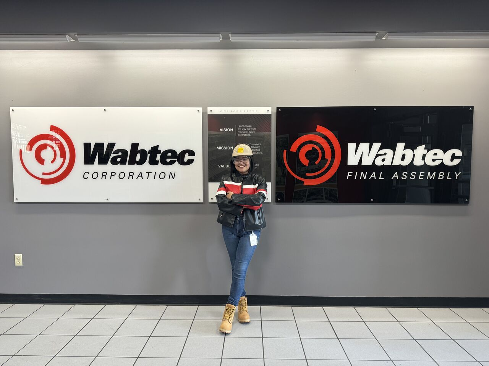
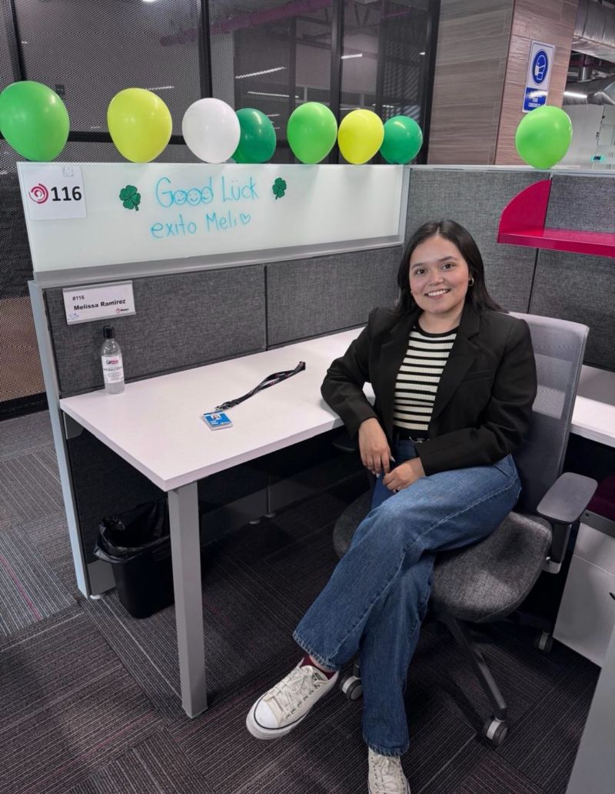
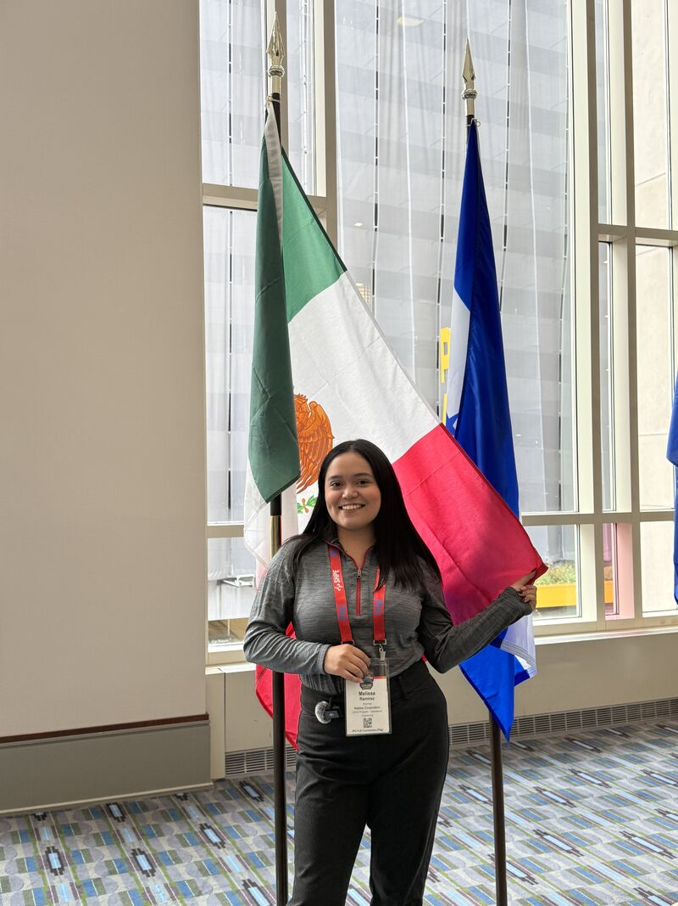
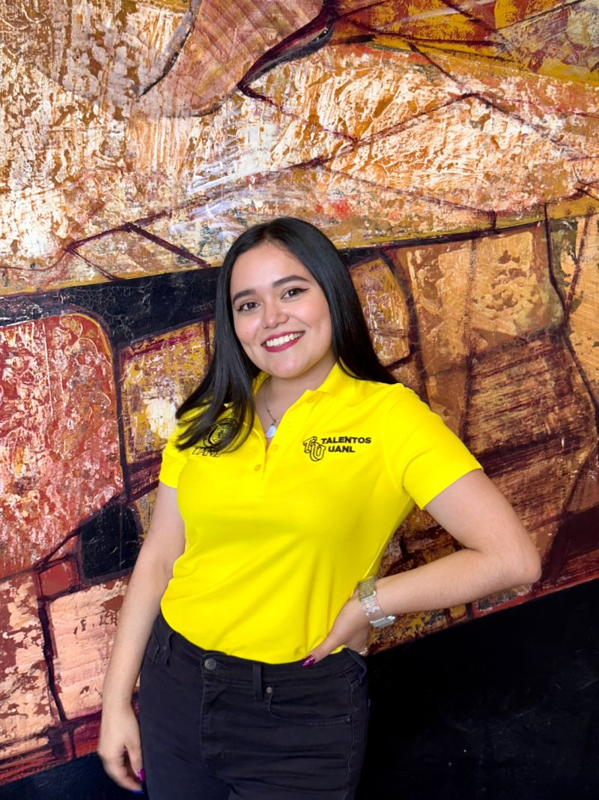

Executive Overview
Dynamic professional with international experience managing operations, global marketing strategies, and interactive media design.
I am a Mechanical Engineer with a strong interest in operations and digital transformation. My background uniquely combines engineering, business, and communication, allowing me to translate complex technical challenges into strategic, human-centered solutions.
Interests: Operations | Digital Transformation | Process Improvement | Global Teams | Innovation | Languages
📩 Always open to connecting, learning, and collaborating on impactful projects.

Dynamic professional with international experience managing operations, global marketing strategies, and interactive media design.


A strong academic backbone built on bilingual continuous improvement and technical communication frameworks during engineering paths.


Leveraged consumer feed metrics to optimize digital marketing project strategies during my Master's track at Rome Business School, directly boosting target audience conversion rates.


Professional tracking across multi-site teams in Europe and Latin America. Fluent in Spanish and English (C1), with strong tracks in Italian, Portuguese, and French.
